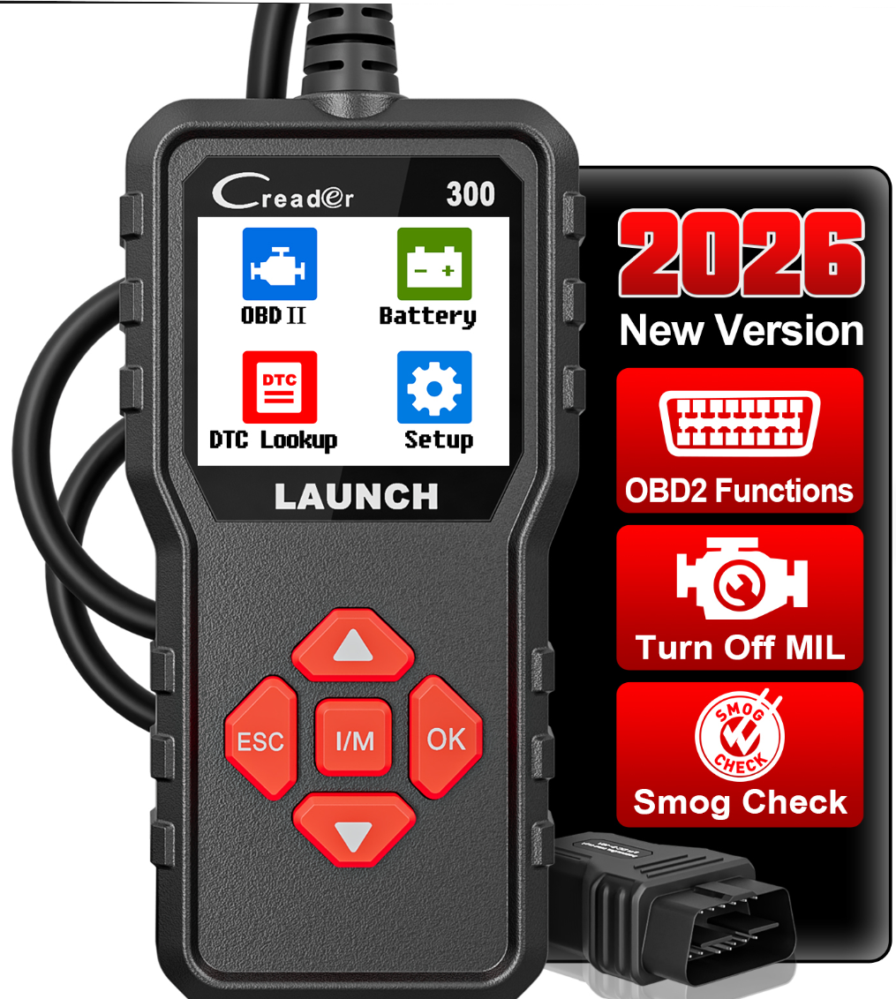

Nouveau

Scanner de Diagnostic Auto Multimarque - Launch Creader CR300
39.00 CHF
TVA incluse · Livraison Gratuite en Suisse
Le Launch Creader CR300 est un outil de diagnostic OBD2 complet et facile à utiliser. Il vous permet de lire et d'effacer les voyants d'erreur moteur, d'analyser l'état de votre batterie en temps réel et d'effectuer un bilan de santé rapide de votre véhicule sans passer par le garage.
- Lecture & effacement de codes — éteint le voyant moteur et identifie la cause des pannes.
- Test de batterie — contrôle de la tension de la batterie en temps réel.
- Données en direct (Live Data) — affichage des paramètres moteur en chiffres et graphiques.
- Plug & Play — alimentation directe par la prise OBD2, sans batterie interne.
- Interface en français — prise en main simple et rapide avec écran couleur.
- Compatibilité universelle — véhicules essence depuis 2001 et diesel depuis 2004.
Quantité
Paiement sécurisé
VISA
TWINT
Apple Pay
Livraison Gratuiteen Suisse
Garantie 2 ansSAV francophone
Plug & PlayPrêt à l'emploi